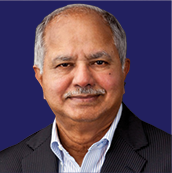
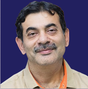
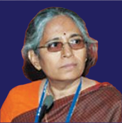

Prof. Raj Reddy
University Professor of Computer Science & Robotics, School of Computer Science, Carnegie Mellon University (CMU), Pittsburgh, USA
Ms. Debjani Ghosh
President, NASSCOM, New Delhi
Shri C Srini Raju
Managing Director, Peepul Capital Advisors Pvt. Ltd., Hyderabad
Shri. Ajit Rangnekar
Director General, Research and Innovation Circle of Hyderabad [RICH], Hyderabad.
Prof. Sanghamitra Bandyopadhyay
Director, Indian Statistical Institute Kolkata.

Shri. Jayesh Ranjan
(Ex-officio) Principal Secretary, Industries& Commerce & IT Departments, Government of Telangana
Ms. Anu Acharya
CEO, MapMY Genome

Prof. Jayanthi Sivaswamy
(Ex-officio) Dean (Academic),
International Institute of Information
Technology, Hyderabad
Prof. R Pradeep Kumar
(Non-Member Secretary) Registrar,
International Institute of Information
Technology, Hyderabad.
Prof. Rajeev Sangal
Director Indian Institute of Technology, (Banaras Hindu University), Varanasi